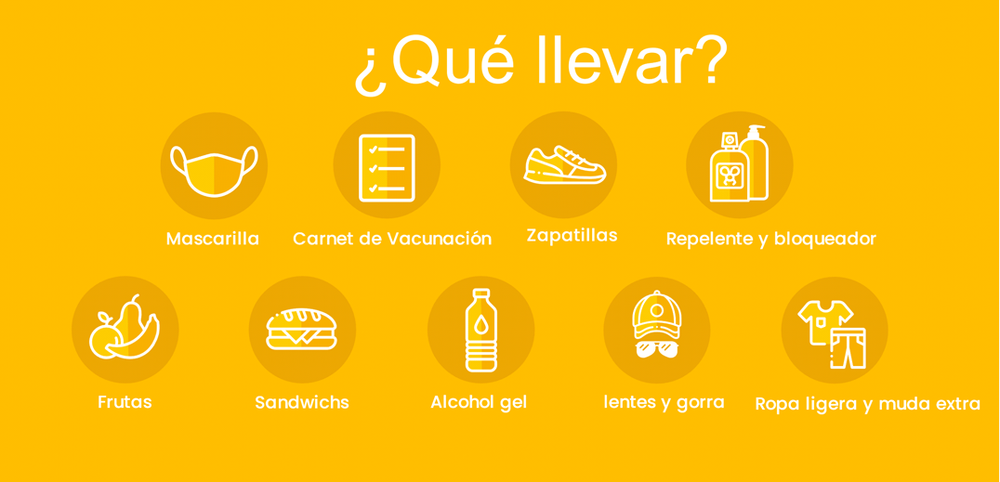

- ✅Tour Básico: S/ 99
- ✅Tour Básico + Islas Ballestas: S/ 105
- ✅Tour Básico + Islas Ballestas + Tubulares + Sandboard: S/ 132
- ✅Niños menores de 5 años no pagan, viajan totalmente gratis.
ITINERARIO
PUNTOS DE EMBARQUES
- 4:15 AM Municipalidad de los Olivos – esquina de la pollería Rokys. 10 minutos tolerancia.
- 4:30 AM C.Comercial Plaza Norte, altura de Av. Thomas Valle con Panamericana Norte, única puerta que da para la Av Panamericana norte.
- 5:00 AM Centro Comercial La Rambla San Borja (Calle Ucello 162 – costado de Ripley) 10 minutos tolerancia.
- 5:15 AM Puentes: Primavera / Benavides / Atocongo / Alipio.
1ra Parada
Iniciamos nuestra aventura haciendo una parada en el balneario de Paracas, desde este lugar se partira hacia las Islas Ballestas, el recorrido tiene una duración 1 horas y 45 minutos aproximadamente. Durante el trayecto podremos visualizar gran variedad de fauna marina: Pelicanos, gaviotas, Guanay, Piqueros, Pinguinos de Humbolt, Zarcillos, lobos marinos, entre otros.

2ra Parada
Nuestro siguiente punto de visita es la Laguna de la Huacachina, un hermosos lugar la cual esta rodeado de inmensas dunas y palmeras. Es el punto ideal para poder tomarse una excelentes fotos, realizar diversas actividades como paseo en vote y disfrutar de sus aguas.

3ra Parada
Nos dirigiremos hacia el mirado de la Huacachina, para una sesion de foto espectaculares y una vista panoramica de toda lalaguna. Opcional, pueden optar por el paseo en tubulares. ALMUERZO: En la Laguna de la Huacachina degustaremos platos tipicos como la sopa seca, carapulcra con chicharron, entre otros platos.
4ra Parada
Luego desarrollaremos la famosa ruta del vino y el pisco para degustar la variedad de destilados que se elabora en la ciudad de Ica como el vino, pisco, macerados, cocteles, etc.
5ra Parada
Por ultimo, visitaremos una de las bodegas vitivinicolas artesanales en Chincha, donde disfrutaremos de un show con bailes negroides y degustaremos vinos y piscos, como tambien empaladarnos de los famosos dulces tradicionales.

NUESTRO PROGRAMA INCLUYE:
- ✅Transporte turístico Lima -
Paracas - Ica - Lima
- ✅Box Lunch abordo (Galleta +
cereal + jugo)
- ✅Visita al Puerto del Chaco.
- ✅Visita a la Bahia de Paracas.
- ✅Visita a las Islas Ballestas.
- ✅Paseo en deslizadores
- ✅chaleco salvavidas.
- ✅Vista al Candelabro.
- ✅Visita a la Laguna de la Huacachina.
- ✅Visita al mirador de la Huacachina.
- ✅Visita a la Reserva nacional de Paracas.
- ✅Visita a las dunas.
- ✅Paseo en tubulares y sandboarding
(segun el paquete que escoja)
- ✅Ruta del vino y pisco.
- ✅Produccion de vinos y piscos.
- ✅Bodega Vitivinicola Racimos de
Uva en Chincha.
- ✅Visita a la bodega Nietto o Viña
Don Pancho en Ica.
- ✅Degustación de vinos, piscos,
macerados y cremas de piscos.
- ✅Degustación de dulces chinchanos.
- ✅Show de baile afroperuano.
- ✅01 botella de vino gratis
al cumpleañero.
- ✅Gratis 1 vino a grupos de 4
personas a más.
- ✅Fotografías durante el recorrido.
- ✅Botiquín de primeros auxilios.
- ✅Sorteos.
NO INCLUYE:
- Alimentacion/Impuestos Turisticos de S/. 20 /Gastos personales.
DEPORTES DE AVENTURA
- ✅Tabulares y Sandboarding S/. 35.00
RETORNO:
Estaremos en lima entre 9:00 pm aprox.
***Fin de nuestros servicios***
Las actividades pueden variar su orden

¿COMO RESERVAR?
- 1 Solicitar Cuentas Bancarias
- 2 Puedes reservar con el 50% y lo restante se paga al subir al bus el día del Tour.
- 3 Enviarnos el comprobante y confirmar sus reservas con Nombres, N° DNI, C.E y número telefónico .
- 4 Solicita tu boleto de abordo digital
Estamos registrados en Ministerio de Comercio y Turismo del Perú MINCETUR único requisito para agencias de viajes formales y BIOSEGURAS.
REVISA NUESTROS TERMINOS Y CONDICIONES ⬇
LINK: "https://bit.ly/36cYjLF "
 Hola, ¿en que podemos ayudarle?
Hola, ¿en que podemos ayudarle?